Scene 1Warm-Up
▶ Start hereHow your Wonder Films lessons work1-minute videoOpen ▾
🎯 TodayI can…
- describe matter by its properties like color, shape, texture, and hardness.
- use tools to measure properties like mass, volume, and temperature.
- compare two objects by their properties and explain how they are different.

🔎 Mystery specimenWhat is this rock made of?
What to do: Press Inspect specimen. Move the magnifying lens over the rock, then tap 3 things you notice.

📚 Word WallWords scientists use
What to do: Tap or click each card to flip it and read what the word means.
Scene 2The Lesson
🌱 Part 1What Is Matter?
Everything around you is made of matter: your desk, the water you drink, even the air you breathe. Matter is anything that takes up space and has mass.
Air is matter too. Blow up a balloon, and the air inside takes up space and pushes the sides out.
🎞️ Put the scenes in orderHow did seashells become a fort?
What to do: Drag each photo into the film strip, from first to last. You can also tap a photo, then tap a frame. Get the order right and your strip becomes a movie.
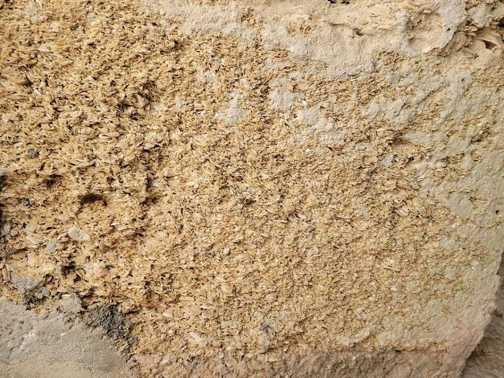
A friend says, "Air isn't matter. You can't even see it." What do you think?
🌤 Part 2Properties You Can Observe
A property is a feature you can observe or measure. You can see color, shape, and size. You can feel texture: smooth, rough, or bumpy.
Hardness tells how easily something can be scratched. A rock is hard. Clay and chalk are soft.
🧪 The Cannonball TestWhich rock takes a hit?
What to do: Follow the steps one at a time. You will pick, test, and then explain.
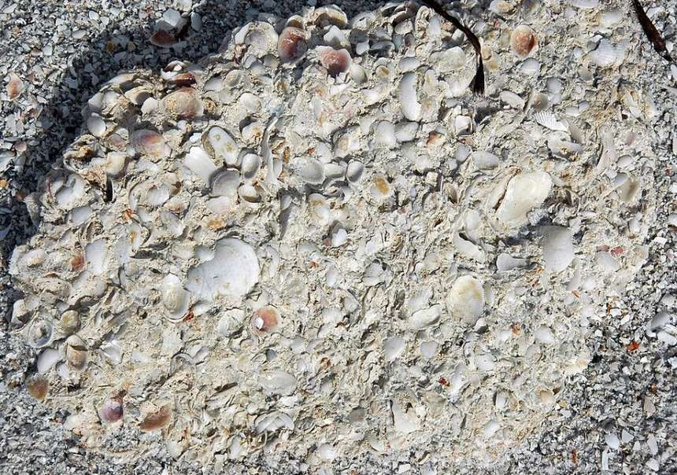

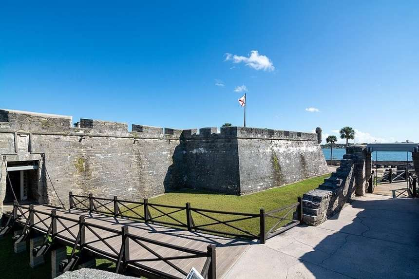
🌍 Part 3Properties You Measure with Tools
Some properties need tools. A balance measures mass. A ruler measures length, and a measuring cup measures the volume of a liquid.
A thermometer measures temperature: how hot or cold something is, in degrees. Sand in the sun has a higher temperature than sand in the shade. Tools give exact numbers, so two scientists can compare what they found.
💎 The Hardness LadderClimb from the softest mineral to the hardest
What to do: First, make a prediction. Then brush the glowing step: drag across it (or tap it again and again) until the mineral shows.
Can your fingernail scratch every mineral?
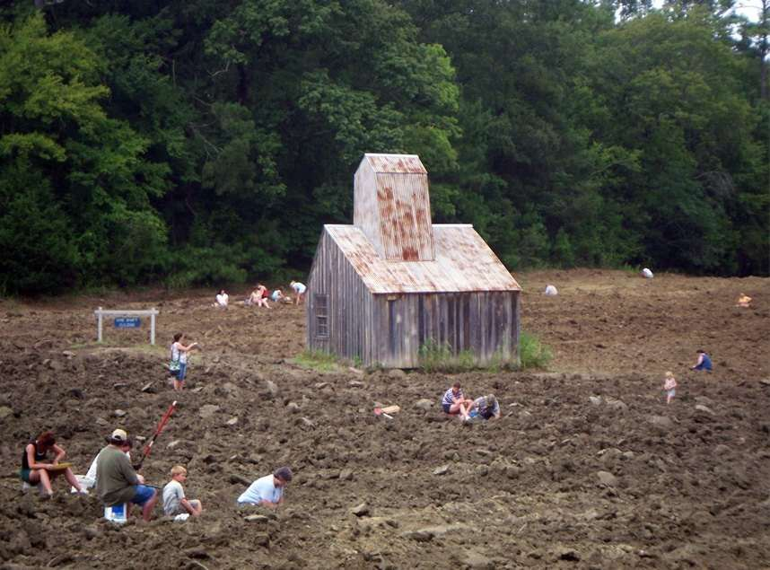
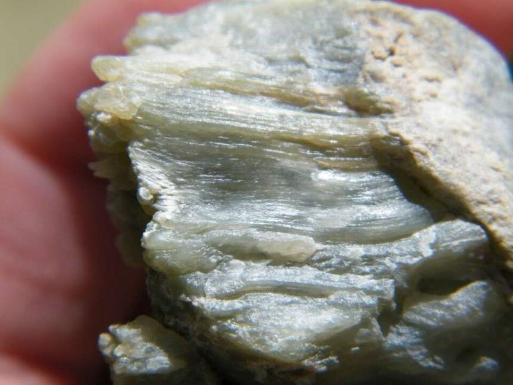
Step 1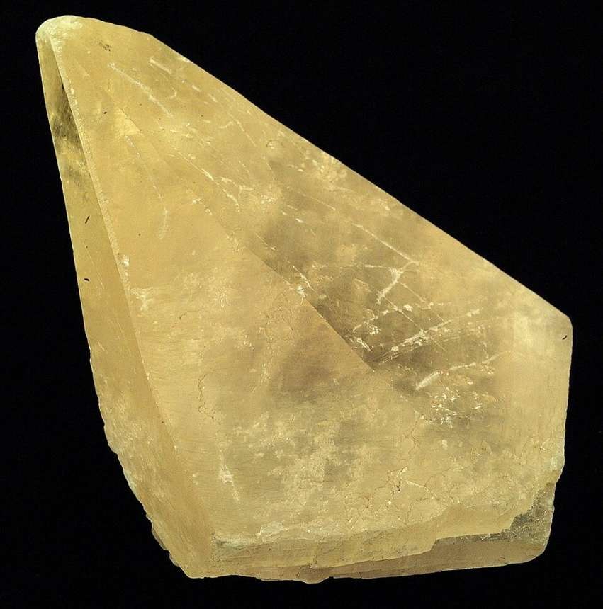
Step 2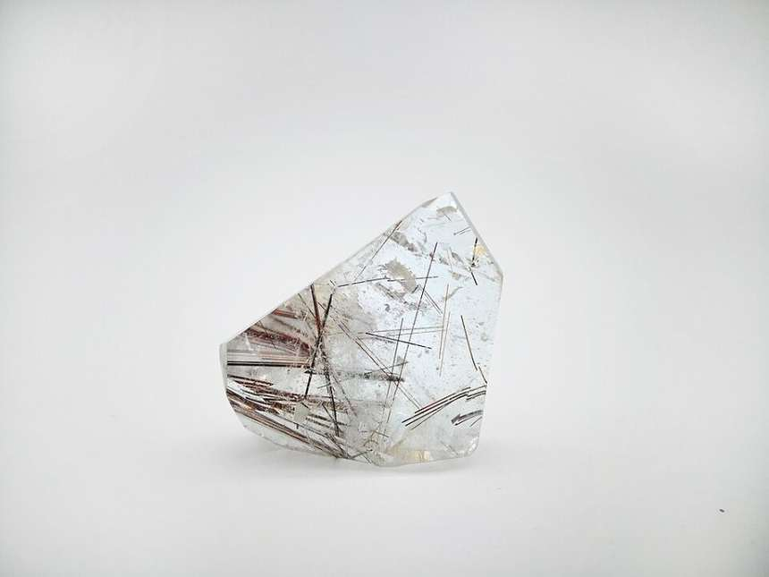
Step 3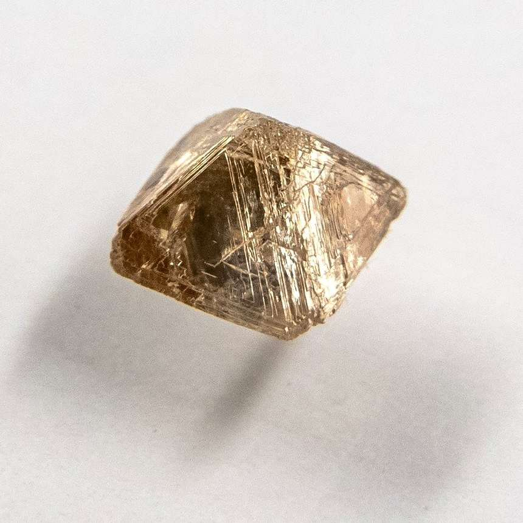
Step 4Hardness is a property you can test. A harder material scratches a softer one. Scientists compare minerals by trying to scratch them, from talc (1) to diamond (10).
A big, puffy pillow and a small rock sit side by side. A student says, "The pillow is bigger, so it has more mass." Is that right?
27 days of cannon fire
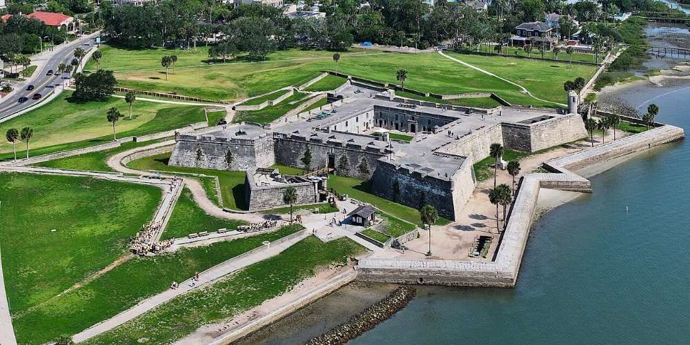
In 1740, a British army fired cannons at the fort for 27 days. The coquina walls held.
The fort was finished in 1695 and was never captured in battle. Park rangers still fire its cannons today, as a show for visitors.
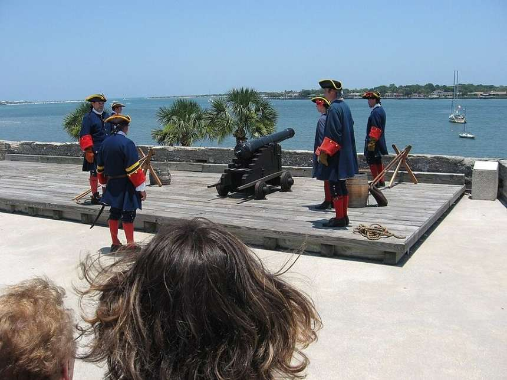
🕵️ Part 4Matter Files
What to do: Pick 3 materials, one at a time. Tap a clue, then name its key property. Predict a job that fits, and watch it at work.
| Matter file | My observation | Property | Job | My evidence |
|---|
🌍 Rebuild the sceneUse your evidence to rebuild the scene OPTIONALOpen ▾
What to do: Pick one you solved. Pick the scene it points to, then pick the things that belong there.
Pick one from your chart and explain it.
Start with: "Material __ is…"
Scene 3Self-Check
What is a property of matter?
Two students pick up a rock and a sponge. The rock feels much heavier. What property is different?
Which tool would a scientist use to measure the mass of an object?
Scene 4Assignment
🔍 Part AProperties chart
What to do: Read each one. Pick the best answer, or type your answer.
1. Which two properties describe a metal coin?
2. Which two properties describe a cotton ball?
3. Which two properties describe a brick?
🚀 Part BShort answer
What to do: Answer in complete sentences. Use your science words.
1. What is the difference between mass and volume? Explain in your own words.
2. Give one example of a property you can see and one property you need a tool to measure.
✍️ Write and explainHow can you use properties to tell two objects apart, even if they look similar?
What to do: Pick one from your evidence chart. Answer the three questions. Use at least one of the science words under the boxes.
Start with: "I think the most useful property for comparing objects is…"
Start with: "I know this because when I observed…"
Start with: "This makes sense because scientists need to measure properties to…"
🎨 Part CDraw and label
What to do: Draw two objects side by side. Label one property they share and one property that is different.
🎬 Your question from Scene 1Can you answer it now?
What do you still wonder about? Write your question here. Then answer it.
📋 My answersEverything you wrote, in one place
(Your answers show up here as you write.)
How to turn in: Copy your answers and paste them into the Canvas assignment. Or download the file and upload it. Then press Save my drawing in Part C and upload your drawing too.
✅ Checklist
What to do: Tap each item when it is done. Items you finish on the page check themselves.
- My evidence chart has 3 matter files and my explanation.
- Part A: all three properties.
- Part B: questions 1 and 2.
- Part C: my drawing and both labels.
- Write and explain, with at least one science word.
🎬 Premiere my matter storyYour exhibit
What to do: Check your exhibit. Pick the one you wrote about, add your first name, then press Premiere film.
I observed…
The key property is…
My evidence…
It tells us…
🎞️ This film's frames
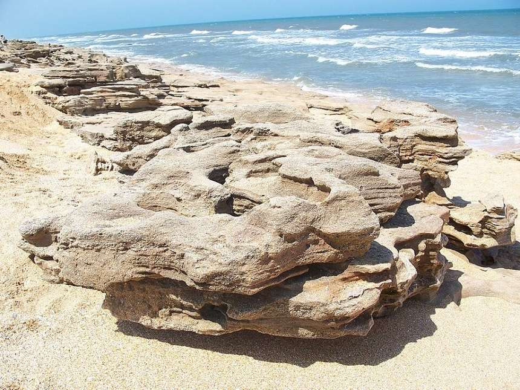
Shells to stone
The Cannonball Test
The Hardness Ladder
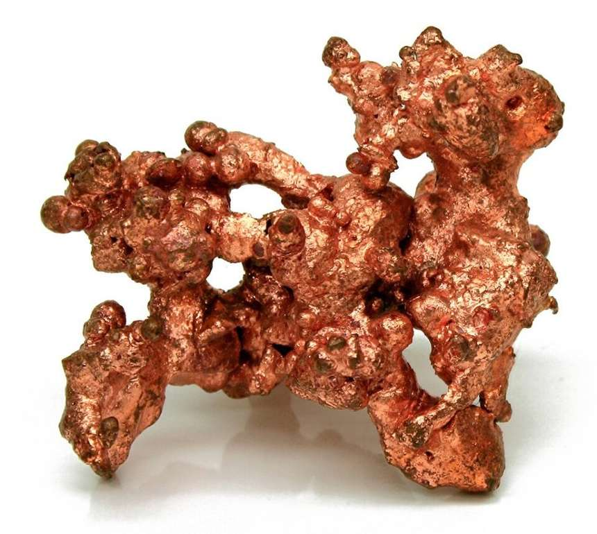
Matter files
Earn all four frames in the Lesson, then finish the checklist.
🔜 Coming up nextComing up next: 26.02
Investigation: Measuring and Comparing Matter. You'll measure mass and volume and compare objects with real numbers.
Photo and music credits
- Castillo de San Marco National Monument - 49894665283, RuggyBearLA, CC BY 2.0
- Rubber bands 20210918 142044, Ka23 13, CC BY-SA 4.0
- Bicycle tire - Cheng Shin, Parhamr, Public domain
- Glass chess pieces, king and queen, Andy Burgess, CC BY 2.0
- Stained glass window, Abbey House Museum - geograph.org.uk - 266112, RichTea, CC BY-SA 2.0
- Native Copper Macro Digon3, Jonathan Zander (Digon3), CC BY-SA 3.0
- Electric guide 3×2.5 mm, Petar Milošević, CC BY-SA 4.0
- Sheep Shearing - Dorset County Show 2025 - 54788781421, Stephen and Helen Jones, CC BY-SA 4.0
- Grey knitted sweater, unknown (Flickr), CC BY 2.0
- Washington Oaks Gardens coquina02, Ebyabe, CC BY 2.5
- Fort Matanzas National Monument, Robert W. Mann, CC BY-SA 3.0
- Talc mine (GeoDIL number - 2134), Nessa Eull, CC0
- Florida Caverns State Park Outdoor Cavern 1, Operator 16, CC0
- Siesta Key Florida Sand Sculpture Contest - panoramio, Michelle Maria, CC BY 3.0
- Crater of Diamonds State Park 004, Kathy, CC BY 2.0
- Cannon & cannonballs at Castillo de San Marcos National Monument (2023), Kiran891, CC BY-SA 4.0
- Castillo de San Marcos, National Park Service, Public domain
- Baptista Boazio's Map of Sir Francis Drake's Raid on St. Augustine (published…, Baptista Boazio (State Library and Archives of Florida), Public domain
- Castillo de San Marcos National Monument - St. Augustine, Florida - 8557890681, Dougtone, CC BY-SA 2.0
- San Pablo Bastion, Castillo de San Marcos, Juliancolton, CC BY-SA 4.0
- Coquina wall at Castillo de San Marcos, Brett Cannon, CC BY-SA 4.0
- Cannon Firing Drill at Castillo de San Marcos, St Augustine, Jim Moore, CC BY 2.0
- Talc-386100, John Krygier, Public domain
- Calcite crystal (GeoDIL number - 698), Nessa Eull, CC0
- Rutilated Quartz Specimen from Madagascar, including Copper Rutiles and Schor…, Meralt Limited, CC BY-SA 4.0
- Raw light brown diamond crystal cut in half 5, W.carter, CC BY-SA 4.0
- Donax variabilis (variable coquina clam shells) (Sanibel Island, Florida, USA…, James St. John, CC BY 2.0
- Washington Oaks Gardens coquina01, Ebyabe, CC BY 2.5
- St Aug Anastasia SP quarries pano01, Ebyabe, CC BY-SA 3.0
- Castillo de San Marcos, St. Augustine, FL - 50857016223, w_lemay, CC BY-SA 2.0
- Coquina wall closeup at Castillo de San Marcos National Monument (2023) 01, Kiran891, CC BY-SA 4.0
- Digging For Diamonds (2245556315), Doug Wertman from Rogers, AR, USA, CC BY 2.0
- Coquina 1, James St. John, CC BY 2.0
- Coquina (Anastasia Formation, Pleistocene or Holocene; Cayo Costa Island, Flo…, James St. John, CC BY 2.0
- Lilesville Granite close-up, Scarlett016, CC BY-SA 4.0
- Aerial view of the Castillo de San Marcos, St. Augustine, FL 2025-05-20, Schwerdf, CC BY 4.0
- Music: "Little" Fugue in G minor, BWV 578 (Johann Sebastian Bach), played by the saxophone quartet of the United States Army Field Band, public domain (via Wikimedia Commons).
- Opti the owl: Optima Academy. Sound effects are made by the page. The shells-to-stone movie, the Cannonball Test, and the Hardness Ladder are models; every place photo is real.